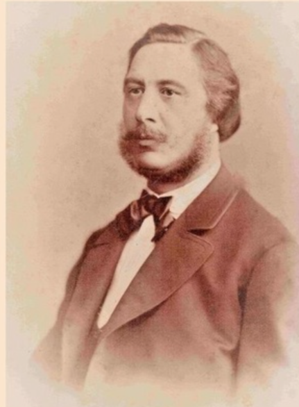

Появлению сада мы обязаны Николаю Скарятину, Казанскому губернатору, российскому
государственному деятелю. Именно его имя носит городской парк.
Заложен он был в 1868 году, после очередного визита Николая Яковлевича в
Чистополь по делам хлебной торговли. Ранее на этом месте располагалась хлебная площадка.
Место было на редкость захламленное и совсем не украшающее облик города.
В исторических источниках сказано, что, увидев эту картину, губернатор устроил
городским властям настоящую взбучку, обязав навести порядок и пообещав лично проконтролировать
ситуацию.
При активной поддержке губернатора в мае 1868 года между улицами Екатерининской
(ныне К. Маркса) и Архангельской (Ленина) был возведен общественный сад с необычайно
красивыми аллеями, павильоном, лет-ним театром, бильярдом, качелями для взрослых и детей.
В 1872 году государем было утверждено ходатайство Чистопольской городской думы о наименовании
общественного сада в честь его основателя Николая Скарятина.
Скарятинский сад считался поистине элитарным местом отдыха. Попасть туда могли не все.
Богатая публика отдыхала в выходные дни, а простому люду и учащимся ремесленных школ
разрешалась прогулка по аллеям. Посещать сад в дневное время разрешалось гимназистам
старших классов
| Имя | Годы жизни | Род деятельности | Фото |
|---|---|---|---|
| Василий Челышев | 1872-1875 | Занимался хлебной торговлей, был общепризнанным благотворителем города. На его средства выстроено здание женской гимназии, главный корпус городской больницы, комплекс зданий старообрядческой (поморской) богадельни и молельни. Личные средства Челышев расходовал на содержание городского водопровода, пожертвовал городу здание для земской управы. | |
| Егор Чукашев | 1815-1890 | Потомственный почетный гражданин г.Чистополя, купец 1-й гильдии, занимался хлебной торговлей. В Чистополе Егор Иванович был владельцем крупного завода и двух ветряных мельниц. Имел хлебные амбары в г.Чистополе и в Рыбинске Ярославской губ. | |
| Иван Остолоповский | 1830–1880 | Числился чистопольским и спасским купцом II гильдии. Помимо хлебной торговли и зернового производства много лет занимал должность старосты Никольского собора. |  |
При активной поддержке губернатора
в мае 1868 года между улицами Екатерининской (ныне К. Маркса) и Архангельской (Ленина)
был возведен общественный сад с необычайно красивыми аллеями, павильоном, лет-ним театром,
бильярдом, качелями для взрослых и детей.
В 1872 году государем было утверждено ходатайство Чистопольской городской думы о наименовании
общественного сада в честь его основателя Николая Скарятина.
Скарятинский сад считался поистине элитарным местом отдыха. Попасть туда могли не все.
Богатая публика отдыхала в выходные дни, а простому люду и учащимся ремесленных школ разрешалась
прогулка по аллеям. Посещать сад в дневное время разрешалось гимназистам старших классов.
Доступ в восточную часть сада с обо-рудованными местами для детей имели няни с маленькими
детьми. Это место буквально поражало своей красотой и великолепием.
Здесь росли уникальные сорта деревьев, кустарников и цветов, выращиванием которых занимались
отдельные бригады садовников. В саду были порядок и чистота. Во избежание неприятных казусов
к Скарятинско-му саду был приставлен городовой.
В выходные дни на его территории устраивались пышные театральные представления,
радовали посетите-лей выступления духового оркестра. Бурно закипела светская жизнь в
Чистополе с появлением нового места для отдыха.

В 2010 году по инициативе депутата Государственного Совета РТ Виктора Смыкова началась его масштабная реконструкция. Он был обновлен и открыт 27 августа 2011 года к 230-летию Чистополя. Здесь появились новые детские площадки, автодром, установлены карусели, ротонда, а также сцена, где проходят значимые события города. В 2015 году в Скарятинском саду был установлен памятник советскому писателю, лауреату Нобелевской премии по литературе Борису Пастернаку. Открытие монумента было приурочено к 125-летнему юбилею со дня рождения писателя и прошло в рамках первых международных Пастернаковских чтений, проводимых чистопольским музеем. Теперь здесь можно не только весело провести время с семьей на аттракционах, послушать приятную музыку и отдохнуть душой, но и оку-нуться в историю нашей страны, изучая артиллерийскую технику и бронетехнику военных лет.